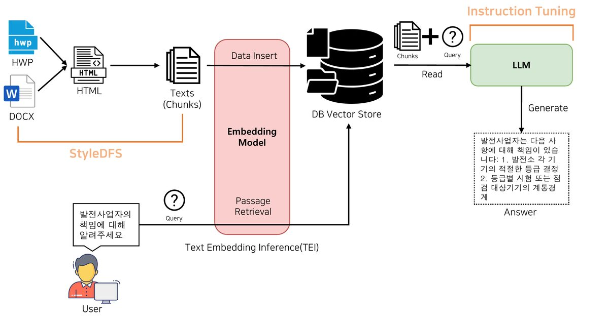

Publications / Top Conferences
Intelligent Predictive Maintenance RAG Framework for Power Plants: Enhancing QA with StyleDFS and Domain Specific Instruction Tuning

EMNLP 2024 · Industry Track · Oct 2024

Abstract
StyleDFS proposes structure-aware chunking for high-stakes industrial QA. The framework improves answer quality while meeting on-premise and privacy constraints in real deployment environments.
Key Contribution
Domain-specific RAG framework for scientific and industrial QA; led to two technology transfers.